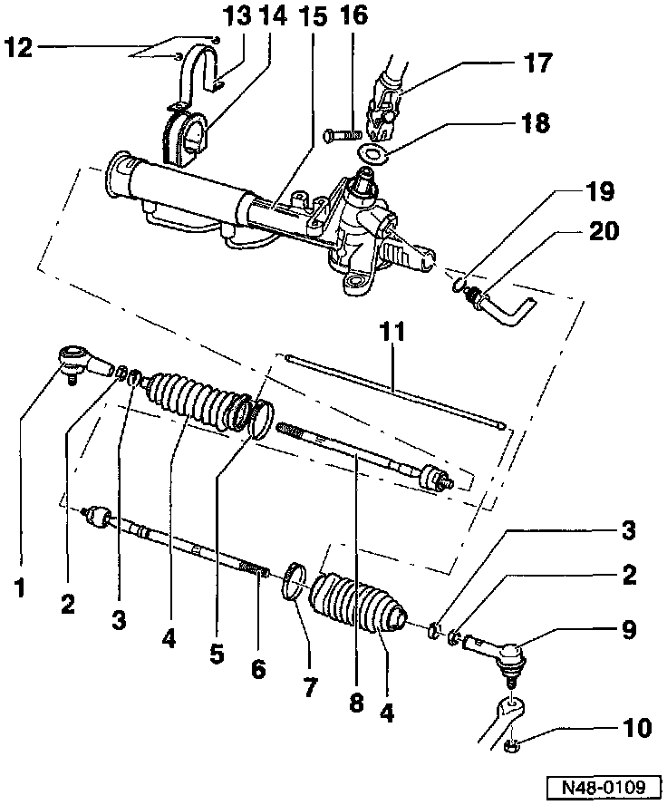

Power Assisted Steering Box (TRW)
Power Steering GearWARNING:
Do not re-use fasteners that are worn or deformed in normal use.
Some fasteners are designed to be used only once, and are unreliable and may fail if used a second time. This includes, but is not limited to, nuts, bolts, washers, circlips and cotter pins. Always follow recommendations and replace these fasteners with new parts where indicated, and any other time it is deemed necessary by inspection
If the power steering gear is malfunctioning determine cause using pressure tests and leakage tests. If a malfunction exists, then replace the steering gear.
Note:
If reservoir fluid is low check steering system for leaks.
If leaks occur at line connections, tighten connections, wipe area dry and recheck for leaks.
The steering gear can be serviced if the pinion seals or the rack seals in the steering gear are leaking.
To check rack seals, loosen the hose clamp on the boot and push boot to one side.
Always replace all self-locking nuts and bolts.
Do not attempt to weld or straighten steering components.
Use only steering gear grease, Part No. AOF 063 000 04 to grease the steering rack.
Type of oil: hydraulic oil, Part No. G 002 000.
System oil capacity: 0.7-0.9 liter (0.74-0.95 US qt.)

1. Tie rod end, right
Separating Power Steering Gear, Removing & Installing
Revised Cabrio tie rod end
2. Nut
50 Nm (37 ft lb)
3. Hose clamp
4. Boot
Pull on and off over tie rod
Must not be twisted after adjusting toe
Not interchangeable with boot for ZF steering gear
5. Clamp
Always replace
Tightening Service and Repair
6. Tie rod, left
70 Nm (52 ft lb)
Removing & installing Service and Repair
Adjusting length Service and Repair
Not interchangeable with tie rod for ZF steering gear
Seat dia. of boot -4- at tie rod
TRW: 12.7mm (0.50 in)
ZF: 15mm (0.59 in)
7. Clamp
Always replace
Tigtening Service and Repair
8. Tie rod, right
70 Nm (52 ft lb)
Removing & installing Service and Repair
Wheel alignment Alignment
Not interchangeable with tie rod for ZF steering gear
Seat dia. of boot -4- at tie rod
TRW: 12.7mm (0.50 in)
ZF: 15mm (0.59 in)
9. Tie rod end, left
Separating Power Steering Gear, Removing & Installing
Revised Cabrio tie rod end
10. Self-locking hex nut
Always replace
30 Nm (22 ft lb)
11. Pressure balancing line
Check for damage (dents, kinks)
12. Self-locking hex nut
Always replace
30 Nm (22 ft lb)
13. Clamp
14. Rubber mounting
Inside diameter
TRW: 44mm (1.73 in)
ZF: 50mm (1.97 in)
15. Steering gear
Removing & installing Power Steering Gear, Removing & Installing
Adjusting Adjustments
Changes to splines on vehicles from VIN _1HN 002 450 Power Steering Gear, Removing & Installing
Steering gear with extra servo assistance only available on vehicles up to 66 kW (90 hp)
16. Bolt
30 Nm (22 ft. lb.)
17. Lower universal joint
Vehicles from VIN _1HN 002 450 Power Steering Gear, Removing & Installing
18. Cover disc
19. Seal
Always replace
20. Union nut
30 Nm (22 ft. lb.)